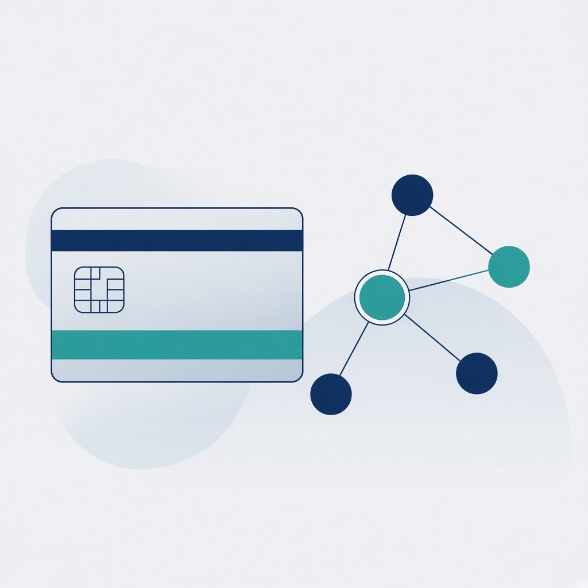
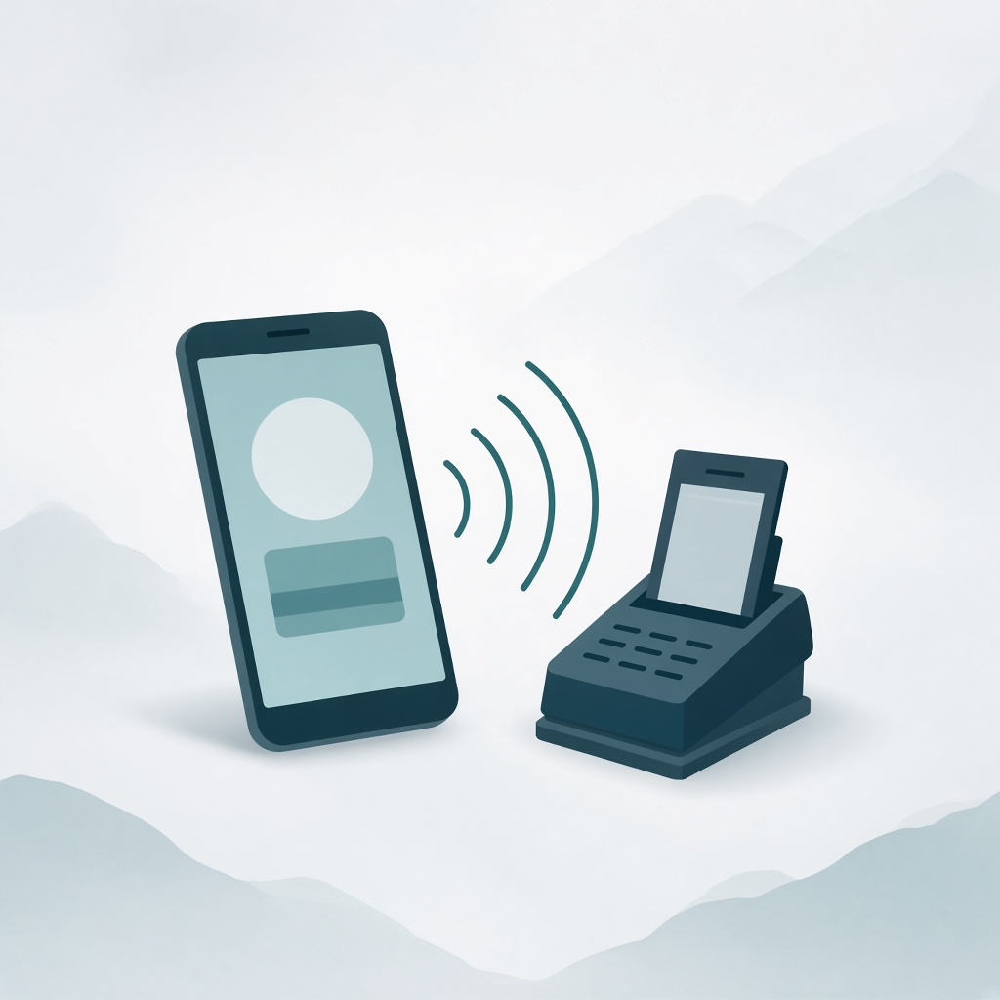

Formation · Support formateur
Paiements digitaux & Wallets numériques
Poser le socle carte, puis enchaîner QR → tokenisation → NFC / wallets → architecture SI omnicanale.


Parcours
Les 5 modules
Module
Objectifs de la formation
- Comprendre les architectures des systèmes de paiement digitaux
- Analyser les technologies QR Code, NFC et tokenisation
- Expliquer le fonctionnement des wallets numériques
- Modéliser les flux transactionnels carte et wallet
- Comprendre les standards internationaux (EMV, ISO)
- Concevoir une architecture SI de paiement omnicanale
- Identifier les enjeux de sécurité, conformité et gouvernance